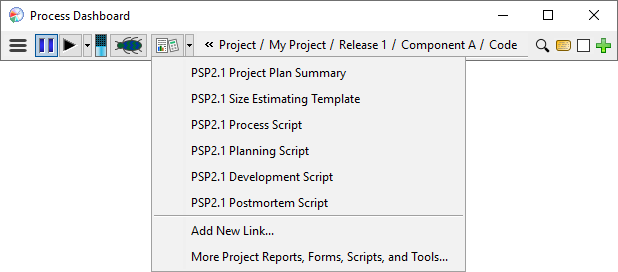
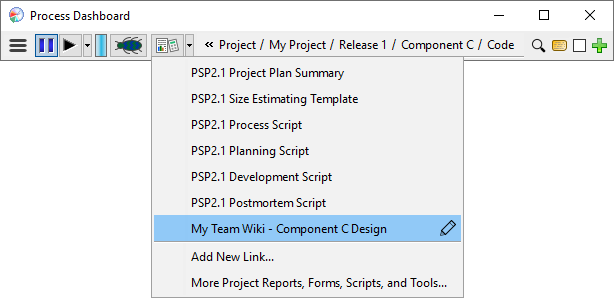

Accessing Project Reports, Forms, Scripts and Tools Accessing Project Reports, Forms, Scripts and Tools
Accessing Project Reports, Forms, Scripts and Tools Accessing Project Reports, Forms, Scripts and ToolsWhen you are using a high-maturity process to do work, that process will commonly provide scripts, forms, reports, and other tools to assist you. To see these items, click the script button on the dashboard.

Clicking the script button will open a menu showing the scripts, forms, reports, and other materials that have been provided by the process for the currently active task.

Choosing an item from this menu will open the named script or form in your web browser.

This example shows a project calling up the Planning script for PSP2.1.
Clicking the script button normally opens the menu of scripts and forms. If you prefer, you can reconfigure the script button so that it automatically opens the default script or form. Just check the appropriate box in the Preferences Tool. After enabling that option, you can use the drop-down button to open the full menu.
You can also select the "More..." option at the bottom of the menu to bring up a script browser. The script browser shows your hierarchy on the left; when you highlight a node in the hierarchy, it displays the available scripts and forms on the right. You can open one of those scripts or forms by double-clicking on it.

The script browser makes it easy to pull up forms for historical projects without needing to change the active task.
In addition to the scripts and forms that come with the dashboard, you may have other web pages that are related to the task at hand. For example:
You can easily attach URLs such as these to the projects and tasks in the dashboard. Just select the "Add New Link..." option near the bottom of the menu. Then enter the name and target of the link, and decide which project, component, or task the link is associated with:
Your custom link will appear in the menu whenever you are working on the selected project, component, or task:

You can alter or delete custom links by clicking the "edit" icon that appears on the right edge of the menu item.
When you create custom links, they are recorded in the note for the selected component or task. If that component/task is part of a team project, the link will be shared with your team members too. For more information on this feature, see the note editor help topic.
Many of the built-in process scripts contain little stopwatch icons on them. These icons provide another way to navigate and time a process phase. When you click on one of these icons, the current phase being measured will change to the phase indicated by the icon and the timer will start measuring time for that phase.
Creating or obtaining documents is often an integral part of performing a process. The dashboard process scripts sometimes provide hyperlinks for these documents. If you click on a document hyperlink, the dashboard will:
The various forms necessary to do your work have data entry fields which are to be used to capture the various process metrics. The forms are continually "live", which means they are always ready and waiting for input. There is no "submit" or "send" button on the forms. Just enter the data in the blanks and the dashboard will record it. Some blanks on the forms are greyed out. These data elements are computed by the dashboard and do not require data input. For more information, see the Entering data help topic.